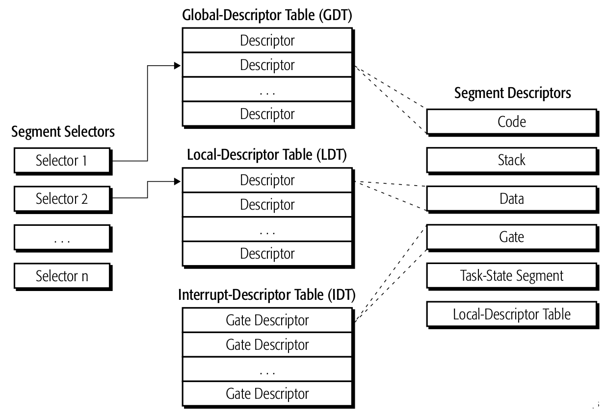
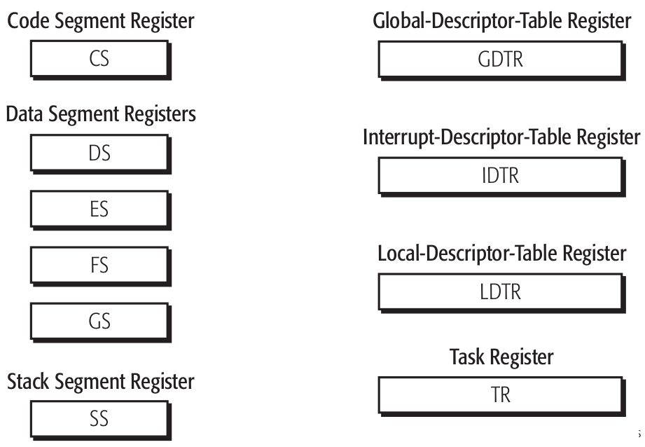
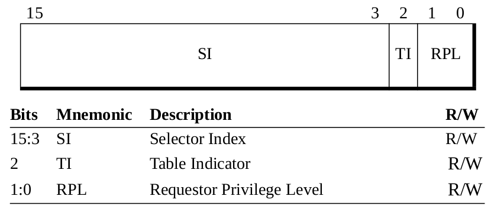
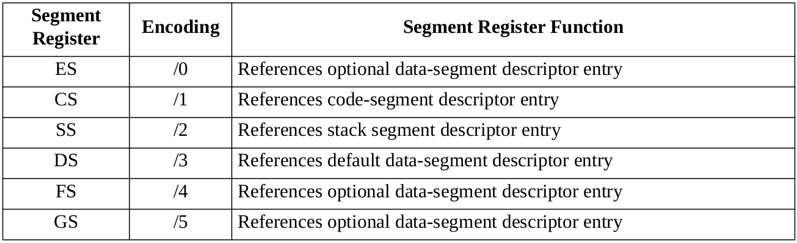
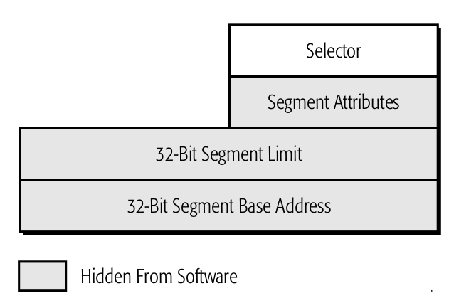
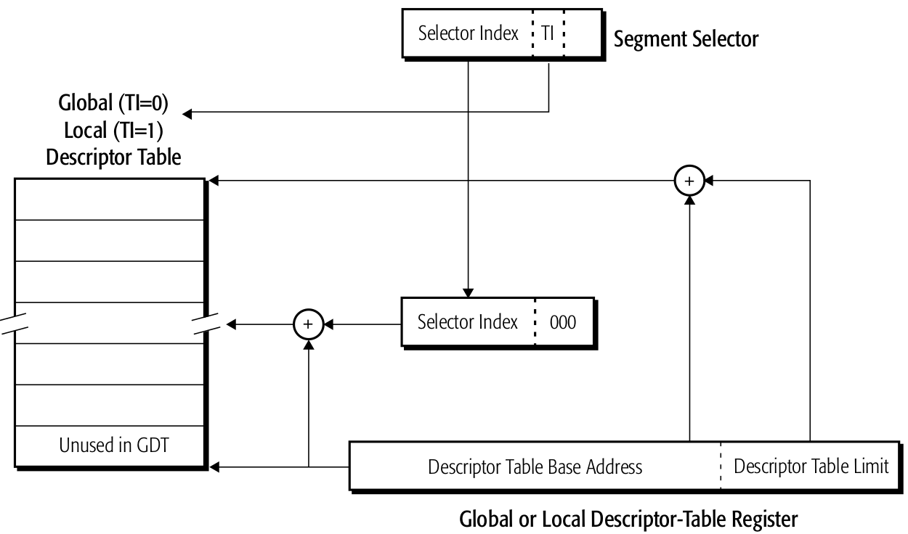

分段虚拟内存
Table of Contents
传统的x86模式支持分段翻译机制，这种机制允许重定位或隔离虚拟内存中的指令和数据。一个段就是虚拟内存中的一片连续内存，其大小或位置可以是任意的。指令或数据可以分配到一个或多个内存段，每个段都有它自己的保护权限。处理器保证段之间的访问满足相应的权限关系。
分段机制提供十个分段寄存器，每个都定义了一个段。其中六个定义了用户段（CS，DS，ES，FS，GS以及SS）。用户段保存了软件、数据以及栈，可以被应用软件或系统软件使用。剩下的四个段寄存器（GDT，LDT，IDT以及TR）定义了系统段。系统段包含一些初始化了的数据结构并且仅由系统软件使用。段寄存器包含一个段的起始基址，limit则指明了段的大小，以及一些指明段保护特性的属性。
尽管分段在重定位以及数据保护方面具有很大的灵活性，但是使用软件与硬件分页结合的机制去处理内存隔离和重定位往往效率更高。由于这个原因，许多现代的操作系统常常绕过分段的特点。然而，分段是不可能完全禁用的，并且对于分段机制的理解对于实现long-moded的系统软件是至关重要的。
在long mode下，分段的作用取决于处理器是否是在兼容或64-bit模式：
- 在兼容模式下，分段的功能和legacy mode下一样。
- 64-bit模式下，分段是禁用了的，64-bit的虚拟地址是平坦寻址的。然而某些段寄存器仍旧保留了它的功能，尤其是系统段寄存器。
1 实模式分段
在重启或加电后，处理器一开始总是会进入实模式，保护模式从实模式进入。
实模式提供1MB的物理地址寻址空间。
每个64K段（CS，DS，ES，FS，GS，SS）都是对齐在16-byte的边界。段基址是给定段的最低地址，并且等于段选择子乘以16，POP和MOV指令可以用于将一个新的段描述符加载到段寄存器，当加载完成后，段选择子会被更新，段基址会被设为选择子×16。段长和段属性不会改变，通常是64K，可读写。
在FAR长转移时，CS段寄存器会被更新成新的值。并且CS的段基址会被设为选择子×16。段长和段属性不会改变，通常是64K，可读写。
GDT，LDT以及TSS在实模式下不被使用。
2 虚拟8086模式分段
虚拟8086模式可以支持16-bit的实模式程序运行在保护模式下。它会使用相对简单的内存分段，可选的分页机制，以及限长保护检查。在虚拟8086模式运行的程序可以访问最大1MB的内存空间。
在实模式下的段，每个64K的段对齐在16-byte字节的边界处。段基址就是给定段的最低地址，并且等于段选择子×16。
3 保护模式分段内存模型
系统软件使用分段机制来支持两个基本的分段内存模型：平坦内存模型以及多段模型．这些分段模型在传统模式以及以及兼容模式都有支持．
3.1 多段模型
多段内存模型中，每个段寄存器可以引用一个独特的基址地址和一个独特的段大小．段的大小可以小至单字节大至4G．当使用分页翻译时，多个段可以映射到单个页或者多页可以映射到一个段．对系统软件来说，多段内存模型提供了最大的灵活性．
使用多段模型的兼容模式可以支持传统软件．然而，在兼容模式下，多段内存模型的访问空间限制在虚拟内存空间的头4G．对于超过4G的虚拟内存访问就要使用64bit模式了，这部分空间不支持分段．
3.2 平坦内存模型
平坦内存是最容易实现的分段形式．尽管分段不能禁止，平坦内存模型却可以使得系统软件绕过大部分的分段机制．
3.3 64位模式下的分段
64bit模式下，分段禁止了．段基址的值被忽略并被分段硬件视作0．相似地，段限长以及大多数属性被忽略，但也有几个例外．CS段的DPL，D以及L属性分别被用来确定程序的权限级，默认的操作数大小，以及程序是否运行在64bit模式或兼容模式．FS和GS段在地址计算中可以被当作基址寄存器，这些段可以有非0的基地址值．这可以加速对某些线程局部数据以及某些系统软件数据结构的寻址．
4 分段数据结构与寄存器
下面的图显示了被分段机制使用的一些数据结构：

Figure 1: 分段的数据结构
- 段描述符：如其名字所示，段描述符描述了一个段，包括在虚拟地址空间的位置，大小，保护属性以及其它的一些属性．
- 描述符表：段描述符是存储在内存中的三个表之一．全局描述符表GDT存放的这些段描述符是可以由所有进程共享的．而局部描述符表LDT可以有多份，存放的描述符都是由特定进程使用的不可被全局共享．中断描述符表存放的门描述符可以用来访问存放有中断描述符的段．
- 段选择子：使用段选择子可以从描述符表里选择出描述符．段选择子里包含有索引，可以索引到是GDT还是LDT，而IDT使用中断向量来索引．
下面的图显示了由分段机制使用的寄存器：

Figure 2: 分段以及描述符表寄存器
这些寄存器和数据结构有如下关系：
- 段寄存器：六个段寄存器(CS，DS，ES，FS，GS以及SS)用来指向用户段．当段选择子被加载到这些段寄存器时就可以选择相应的段描述符．
- 描述符表寄存器：三个描述符表寄存器(GDTR，LDTR以及IDTR)用来指向系统段．描述符表寄存器指明了描述符表的虚拟地址以及大小．
- 任务寄存器：描述了当前任务段的位置以及限长．
5 段选择子与寄存器
5.1 段选择子
段选择子指向全局或局部描述符表里的条目，下面的图展示了段描述符的格式：

Figure 3: 段选择子的格式
选择子由以下域组成：
选择子索引 ：15:3比特，选择子索引域指明了描述符表里的一个条目．描述符表条目是8字节长，所以选择子索引要乘以8可以形成在描述符表里的偏移，这个偏移会加入到全局或局部描述符表基地址上然后形成一个描述符表条目的虚拟地址，而至于是哪个表，由表索引比特决定．
表标识比特（TI） ：比特2．该比特标识了是哪个表存储了由index域索引的描述符．TI=0时使用的是GDT，而TI=1时使用LDT．通过这个比特，描述符表的基址就可以加上上面描述的索引域．
请求子权限级域 ：比特1:0．RPL（Requestor Privilege-Level）主要用来做权限检查，阻止运行在低级别的软件去访问需要权限级的数据．
5.2 段寄存器
六个16比特的段寄存器用来引用一次最多六个段．所有的软件进程都会要求CS和SS寄存器中被加载段选择子，而是否使用DS，ES，FS或GS却是可选的，但是几乎所有的软件都会访问数据，故而在DS中填选择子也就是必要的了．下面的表列出了支持哪些段寄存器以及它们的作用：

Figure 4: 段寄存器
除了由软件加载的选择子的值，处理器还会维护一个段寄存器的隐藏部分．隐藏部分包含有在描述符表中查找到的条目，它由对应的选择子引用．当段寄存器被加载时，处理器就会加载描述符表条目到隐藏部分．通过保存对应的描述符表条目到硬件里，对于大多数的内存访问性能都有优化．
下面的图展示了段寄存器的可见和不可见部分，除了FS和GS的段基址，软件不能直接读或写隐藏部分，也就是图中的灰色部分．

Figure 5: 段寄存器格式
CS寄存器 ：CS寄存器包含的段选择子可以引用到当前代码段描述符条目．所有的取指都会引用到CS 描述符．当新的选择子被加载到CS寄存器时，处理器的CPL就会被设置为那个CS段的DPL．
数据段寄存器 ：DS寄存器包含段选择子，引用到默认的数据段描述符条目．SS寄存器包含栈段选择 子．ES，FS以及GS是可选的，可以加载段选择子用来引用其它的数据段．除了以下两种情况，数据访问默认是引用DS描述符：
- ES描述符用来引用到字符串指令地址．
- SS描述符引用到栈操作．
6 描述符表
当保护模式打开时(CR0.PE=1)，分段机制就会使用描述符表．这些表所存放的条目，描述了一个段的位置，大小以及权限信息．在保护模式下的内存引用都会通过描述符表条目．
前文提到，x86支持三种类型的描述符表：
- 全局描述符表(GDT)
- 局部描述符表(LDT)
- 中断描述符表(IDT)
通过初始化对应的描述符表寄存器，软件可以设置描述符表在内存里的位置．接下来介绍下描述符表与描述符表寄存器.
6.1 全局描述符表
保护模式的系统软件必须创建一个全局描述符表．GDT所包含的代码段或数据段(用户段)描述符条目，其对应的段是可以被所有进程共享的．除了用户段，GDT也可以存放门描述符以及其它的段描述符．系统软件可以将GDT存放在内存里的任何位置，并且对于非权限软件的访问，要保护起来．
当段选择子中的TI域被设为0时，段选择子指向GDT．段选择子的索引部分指向GDT中的一个特定条目．下面的图展示了段选择子怎样索引到GDT里．

Figure 6: 访问GDT或LDT描述符表
一种特殊形式的段选择子就是空选择子．空选择子指向GDT中的一个条目(也就是段索引为0以及TI=0)．然而，空选择子不引用内存．第一个可用的GDT条目其选择子部分的索引是1．
6.2 全局描述符表寄存器
全局描述符表寄存器指向GDT在内存中的位置并且定义了GDT表的大小．这个寄存器通过LGDT指令从内存里加载．下面的图展示了在long模式下的GDTR格式：
Figure 7: GDTR及IDTR格式
GDTR包含两个域：
Limit 2字节．共16比特，指明了GDT的大小和限长．limit的值和基地址的值相加，即得GDT结束字节的位置．如果软件尝试访问超过GDT限制的描述符，通用保护异常(#GP)就会发生．
基地址 8字节．基地址域存放了GDT在虚拟内存的开始地址．GDT可以位于虚拟地址空间的任意字节地 址，但是系统软件应该将它对齐到四字节边界处，避免访问非对齐数据时带来的性能损失．